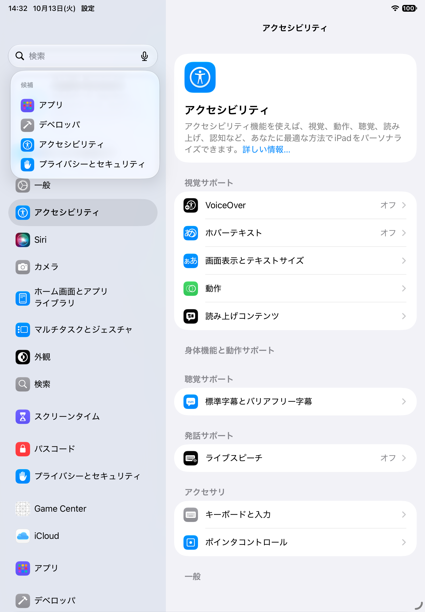
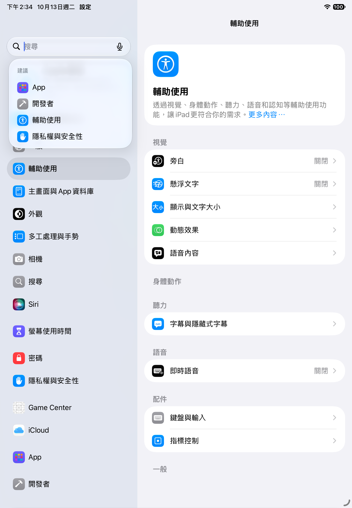
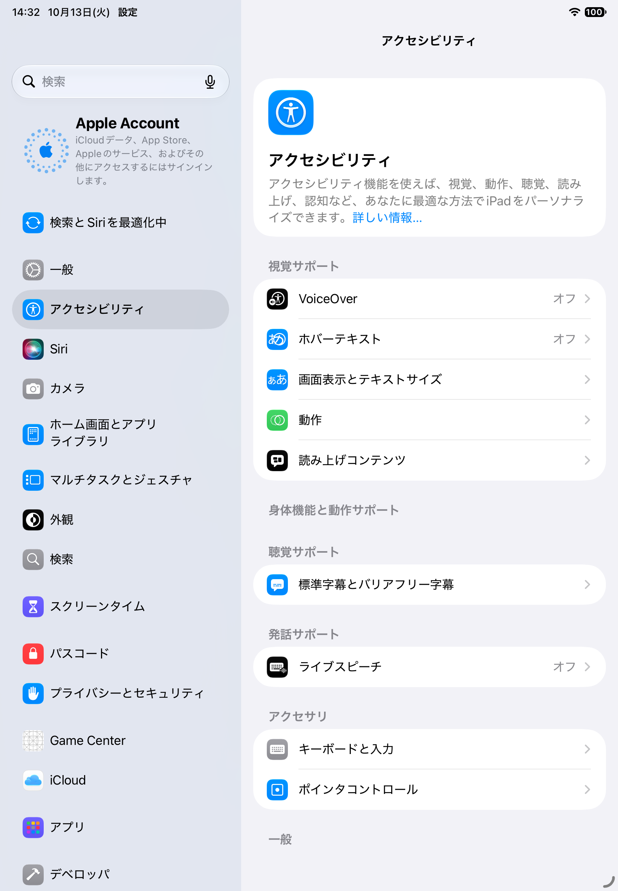
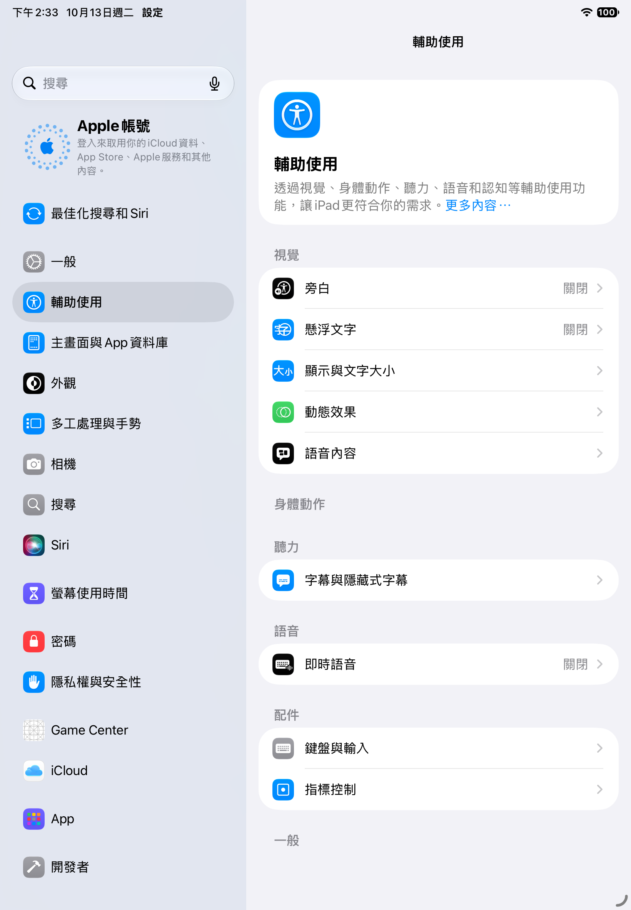
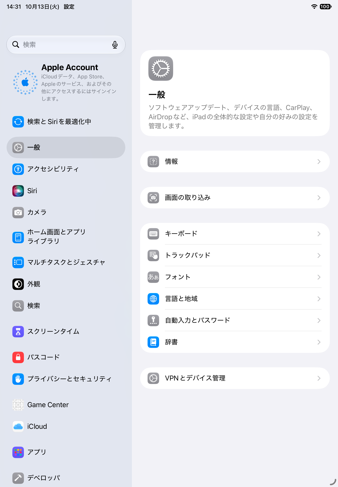
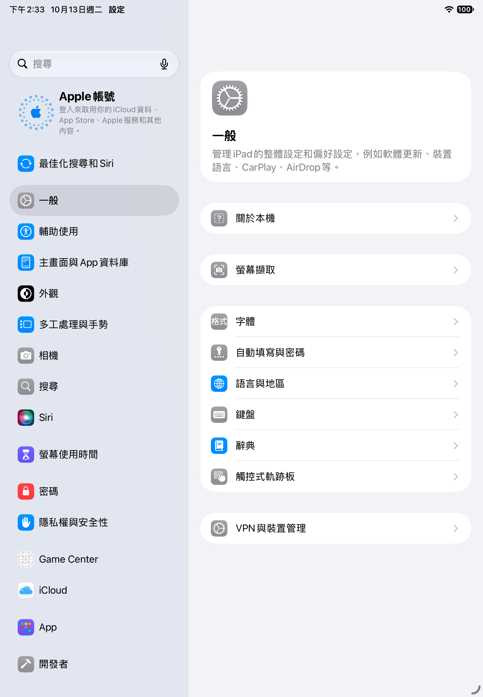
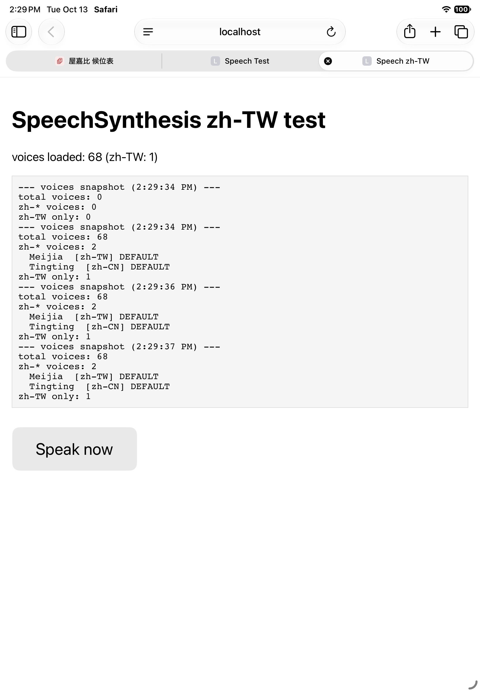
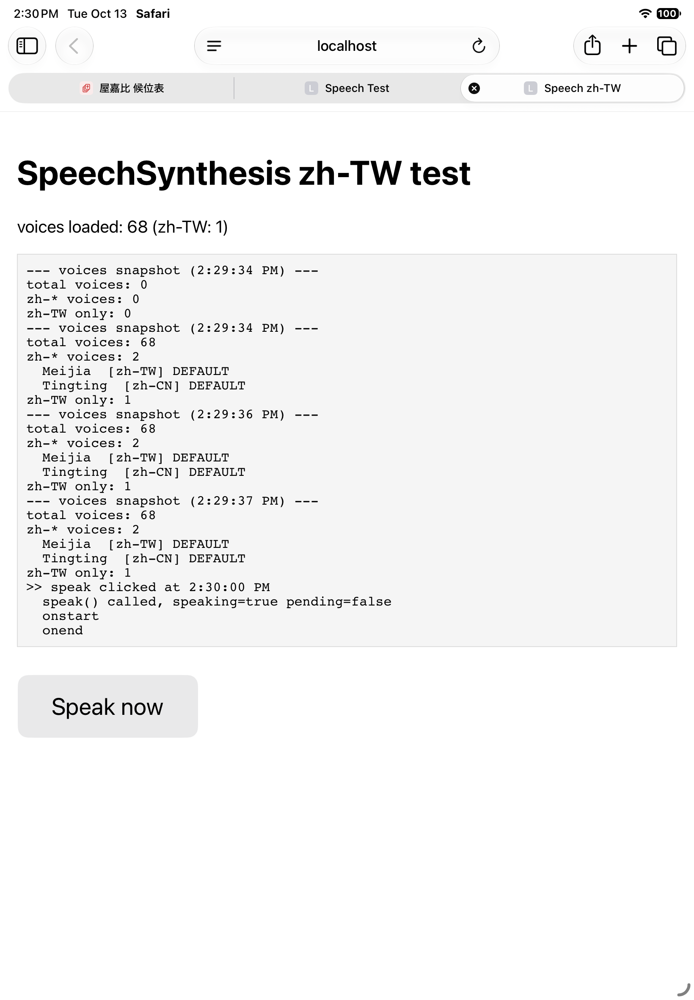

目的は3つです。① 入口の iPad で入った新しい受付を、厨房スタッフが Bluetooth の骨伝導イヤホンから「読み上げ」で聞けるようにする。② 入口と厨房で声の会話ができるようにする。③ 受付の情報が自動で消えずデータベースに残るようにする。候位表（Web）の変更は屋嘉比さまの Claude にそのまま貼れる指示文を章 ② に用意しました。
候位表は 1 枚の Web ページです。入口の iPad と厨房の iPad から同じ URL を開き、最初の画面で「入口平板（role='entrance'）」か「員工叫號機（role='staff'）」のどちらかを選びます（この選択は localStorage の yakabiKouiRole に保存されます）。両方の端末は裏側で同じデータベースを見ていて、片方が「候位」を登録すると、もう片方の画面にすぐ出ます（内部で onSnapshot という仕組みを使っています）。
データベースにある表（コレクション）は 4 つです。
| 表の名前 | 何が入っているか |
|---|---|
queue | その日の受付 1 組ごとに 1 行。number, partySize, name, phone, kidsChair, status, date, createdAt, calledAt, seatedAt, cancelledAt など。status は waiting / called / seated / cancelled。 |
reservations | 電話予約。arrived が true になると「已到達（到着）」。 |
settings/config | 平均待ち分数（1 人あたり）などの共有設定。 |
stats/{日付}_{時刻} | 16:00 と 22:00 の自動片付けの直前に、その日の「組数・座った数・残った数・取消し数」をまとめて記録する集計表。 |
音は playChime という関数が WebAudio（ブラウザ内蔵の音源）で短い 2 音を鳴らします。今の作りでは、入口平板（role === 'entrance'）で、まだ鳴らしていない組が called（叫號中）になった時だけ鳴ります。員工叫號機（role === 'staff'）には、新しい受付が入っても音も読み上げもありません。これが「厨房スタッフが入口の受付に気付かない」の根の原因です。
checkScheduledCleanup という関数が 16:00 と 22:00 に走り、その日の集計を stats/日付_16（または _22）に 1 行書いてから、queue の各行を 1 件ずつ delete します。姓名・電話・各時刻は残りません。これが「履歴が残らない」の根の原因です。
下の指示文を、屋嘉比さまが候位表を編集している Claude の会話にそのままお貼りください。関数名・表の名前・変数名はいま候位表に実在するもの（playChime / checkScheduledCleanup / queue / stats / onSnapshot / role / todayEntries / calledIdsSeen）だけで書いてあります。
以下の 2 つの変更を候位表（Claude の Artifact）に加えてください。
関数名・表の名前・変数名は現在のコードにあるものをそのまま使うこと。
── 変更 1：員工叫號機（role === 'staff'）で、新しい受付と予約の「已到達」を
中国語（台湾）で読み上げる。
既存の render() の中、role === 'entrance' のブロックで
calledIdsSeen を使って chime を鳴らしている箇所と同じ考え方で、
staff 側に「新しく出てきた組」の検出を追加する。
1) モジュールの先頭（var calledIdsSeen = {}; の近く）に、新しく足す：
var spokenWaitingIds = {}; // 既に読み上げた候位の id
var spokenArrivedIds = {}; // 既に読み上げた「已到達」予約の id
2) 新しく足す関数 speakZhTW(text) を定義する：
function speakZhTW(text) {
if (!('speechSynthesis' in window)) return;
try {
var u = new SpeechSynthesisUtterance(text);
u.lang = 'zh-TW';
u.rate = 0.95;
window.speechSynthesis.speak(u);
} catch (e) {}
}
3) render() の中、role === 'staff' のときだけ以下を実行する処理を追加する
（role === 'entrance' の chime ブロックのすぐ下あたり）：
if (role === 'staff') {
// 初回ロードでいま並んでいる組を全部読まないようにするための印
if (!spokenWaitingIds.__initialized) {
waiting.forEach(function (e) { spokenWaitingIds[e.id] = true; });
spokenWaitingIds.__initialized = true;
} else {
waiting.forEach(function (e) {
if (spokenWaitingIds[e.id]) return;
spokenWaitingIds[e.id] = true;
// 例: 「3號，2位，需要兒童座椅」
var text = e.number + '號，' + e.partySize + '位';
if (e.kidsChair) text += '，需要兒童座椅';
speakZhTW(text);
// 読み上げた時刻を書き戻す（後からの振り返り用）
if (db) {
db.doc('queue/' + e.id).update({ spokenAt: new Date().toISOString() })
.catch(function () {});
}
});
}
}
4) 予約の reservations.onSnapshot のコールバックの中（arrived が true になったとき）
に、同じ考え方で以下を足す。reservations の購読が staff でも動くことを確認し、
staff のときだけ speakZhTW を呼ぶ：
if (role === 'staff') {
if (!spokenArrivedIds.__initialized) {
reservations.forEach(function (r) { if (r.arrived) spokenArrivedIds[r.id] = true; });
spokenArrivedIds.__initialized = true;
} else {
reservations.forEach(function (r) {
if (!r.arrived || spokenArrivedIds[r.id]) return;
spokenArrivedIds[r.id] = true;
var nm = r.name || '預約';
speakZhTW('預約的客人到了：' + nm);
});
}
}
── 変更 2：checkScheduledCleanup で消す前に、各組の全項目を history 表に
写してから消す。
現在の checkScheduledCleanup は：
db.doc('stats/' + stats.date + '_' + slot).set(stats).then(removeAll)
の順で、集計を書いてから各行を delete している。
removeAll を次のように差し替える：
var removeAll = function () {
entries.forEach(function (e) {
// 1 組の全項目を history に写す
var copy = {};
for (var k in e) { if (Object.prototype.hasOwnProperty.call(e, k)) copy[k] = e[k]; }
copy.archivedAt = new Date().toISOString();
copy.archivedSlot = slot; // '16' または '22'
copy.sourceId = e.id;
if (db) {
db.doc('history/' + e.id).set(copy)
.then(function () { db.doc('queue/' + e.id).delete().catch(function () {}); })
.catch(function () {
// 書き込みに失敗した時は、queue からは消さない（データ消失を避ける）
});
}
});
};
これで、16:00 と 22:00 に queue の行は消えても history 表に全項目が残る。
今まで通り stats にはその日の集計も残る。既存の UI は書き換えない。
音声は iOS Safari で、ページ上で何か 1 回タップしてから鳴る（音の制約）。
員工叫號機の画面を初めて開いたとき、スタッフは画面のどこかを 1 回タップしてから
日常運用に入ってほしい。
speechSynthesis.getVoices() は zh-TW の声として Meijia を 1 件返しました。speak() の呼び出しで onstart / onend も発火しています。章 ⑥ のテスト写真をご覧ください。
員工叫號機を出す iPad を、画面が勝手に消えないように、他のアプリに移らないように設定します。この章は、設定アプリの「どこを開くか」を日本語と繁體中文で並べて書いてあります。
設定場所の名前（iPad OS で言語を切り替えると文言が変わります）：

04_ja_search_no_jidou_lock.png）── Simulator では候補にすら出てこない。
07_zhTW_search_no_jidong.png）── 同じく候補なし。アクセスガイドをオンにすると、1 つのアプリに画面を固定でき、ホームへのスワイプや他アプリへの移動を遮断できます（屋嘉比さまが決めた暗証番号を入れないと解除できない仕組み）。

03_ja_accessibility.png）── 画面を一番下まで下げると「一般」のまとまりの中に「アクセスガイド」が出ます（Simulator ではその下の項目まで表示されませんでした）。
06_zhTW_accessibility.png）── 一番下に「一般」があり、その下に「引導使用模式」が入ります。アクセスガイドを使うときは、候位表（Safari のページ）を開いた状態で、サイドボタンを 3 回連続で押すと開始／終了できます（これは Apple 標準の操作です）。

02_ja_settings_general.png）── サイドバーに「アクセシビリティ」が見えています。
05_zhTW_settings_general.png）── サイドバーに「輔助使用」が見えています。厨房スタッフが使う骨伝導イヤホンは Shokz OpenComm2（ブームマイク付き）です。耳をふさがないので、厨房の音を聞きながら読み上げを聞けます。公式仕様の要点は 3 つです：
厨房スタッフが複数名いる場合は、スタッフ 1 人につき 1 つの iPad と 1 つの OpenComm2 が必要です。iPad 1 台から複数のイヤホンに同じ音を鳴らすこと（「オーディオを共有」）は、Apple の AirPods / Beats 同士では可能ですが、OpenComm2 を含む第三者イヤホンではできません（出典は末尾 Apple サポート dev3786f35c8）。
したがって運用は「員工叫號機の候位表を、厨房スタッフが使う iPad 1 台ごとに 1 画面ずつ開く」になります。
候位表（Web ページ）の中では、入口と厨房の声の会話は作れません。候位表が置かれている claude.ai の Artifact は、Mits さまが参謀にご指示されたとおり、マイクを扱う仕組みを持っていません。
そこで会話は Apple 標準の FaceTime オーディオで行います：
ipad11dbabaf は「自動で電話に出る」が FaceTime の着信に効くとは明記しておらず、別ガイド ipada16d1374 も「オーディオの出力先」の話題と並べて書かれています。本番運用の前に、必ず屋嘉比さまの実機で 1 本 FaceTime をかけて、ベルが数秒鳴ったあと勝手に繋がるかをご確認ください。
history 表を見せて」とご指示ください。章 ⑤ の Safari テスト結果：

total voices: 68／zh-* voices: 2（Meijia [zh-TW] DEFAULT、Tingting [zh-CN] DEFAULT）／zh-TW only: 1。
speaking=true／onstart／onend まで到達しました。
Apple サポート「iPad の画面を自動的にオフにするまでの時間を変更する」
https://support.apple.com/ja-jp/guide/ipad/ipad3287d76b/ipados
Apple サポート「iPad で通話オーディオルーティングを変更する」
https://support.apple.com/ja-jp/guide/ipad/ipad11dbabaf/ipados
Apple サポート「iPad で電話に自動的に出る」
https://support.apple.com/ja-jp/guide/ipad/ipada16d1374/ipados
Apple サポート「AirPods または Beats で音声を共有する」（第三者製品は非対応）
https://support.apple.com/ja-jp/guide/airpods/dev3786f35c8/web
WebKit Bug #223473（iOS Safari で speechSynthesis がユーザ操作無しに自動発火しない件）
https://bugs.webkit.org/show_bug.cgi?id=223473
Shokz OpenComm2 UC 公式仕様（最大 30 m／最大 16 時間／マルチポイント）
https://jp.shokz.com/products/opencomm2uc-2025upgrade